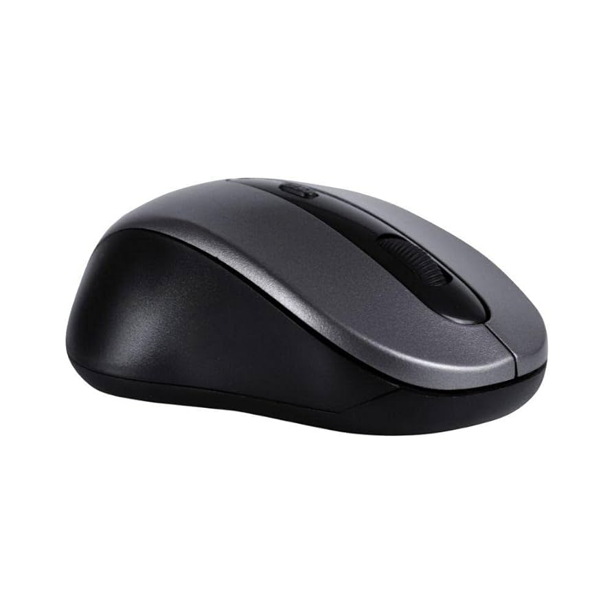

Mouse
Retículo
O mouse (também chamado de rato) também é um dispositivo de entrada.
Ele posiciona e controla um cursor virtual na tela do computador para facilitar a navegação,
permitindo que o usuário ative botões, arraste coisas, entre outras funções.